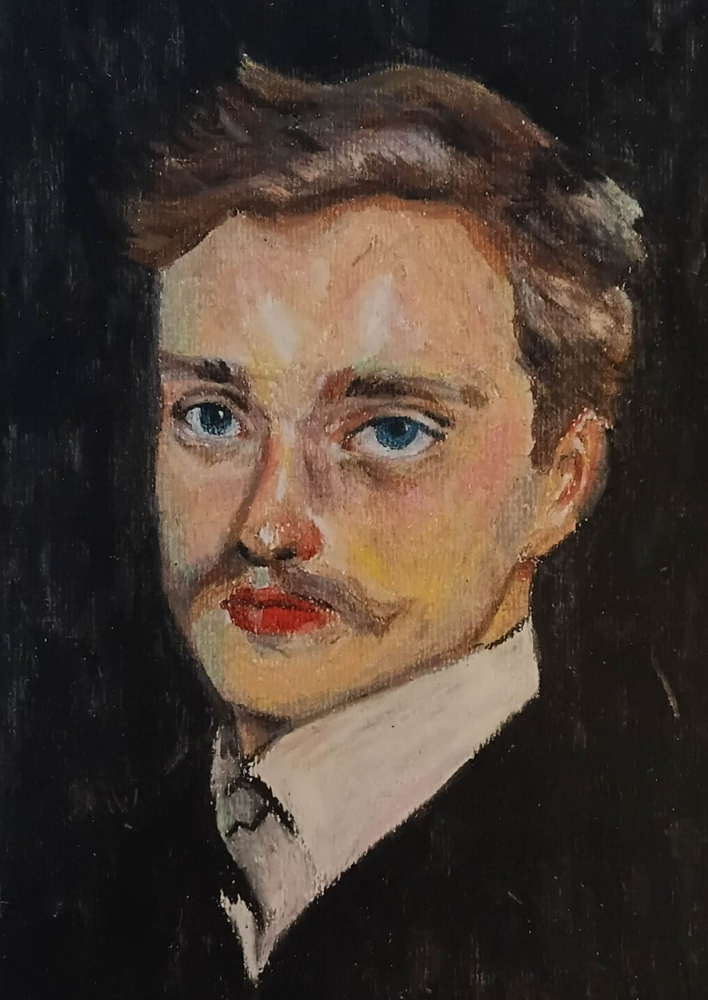
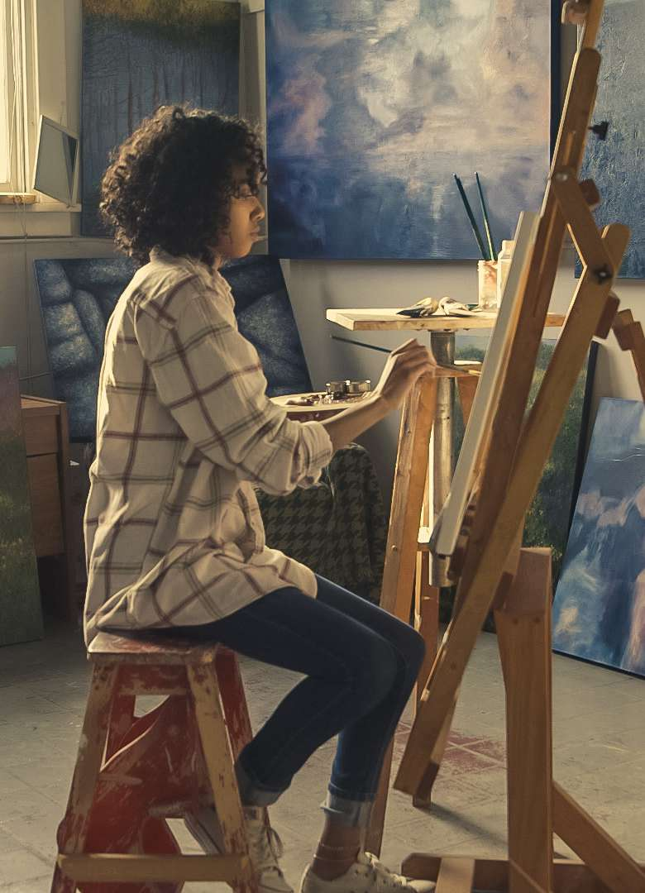
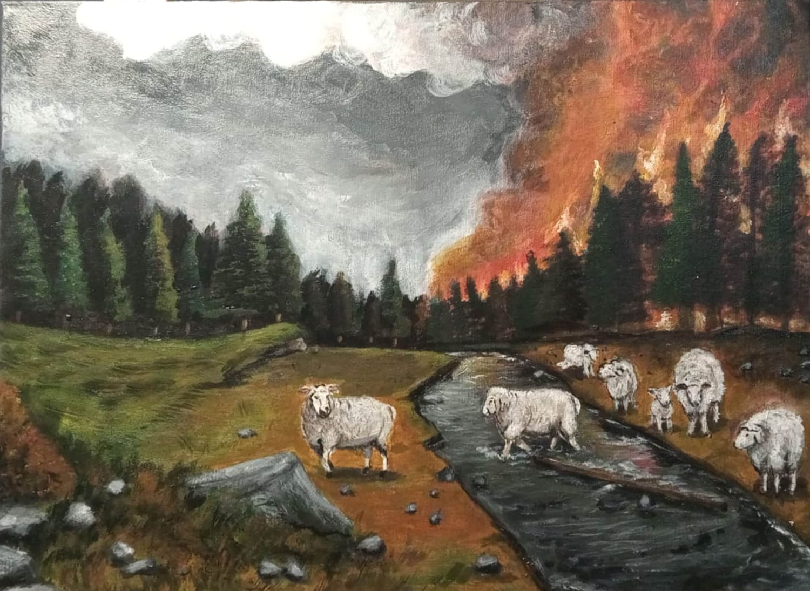
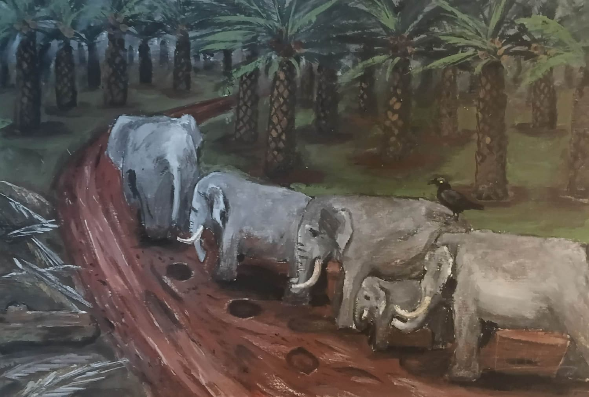
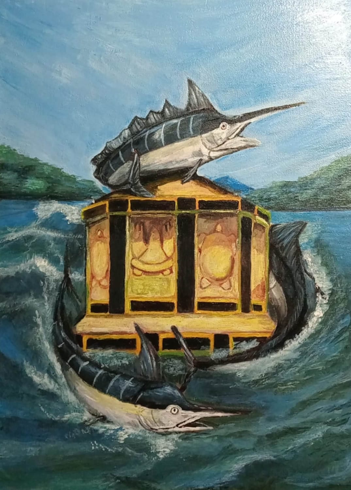
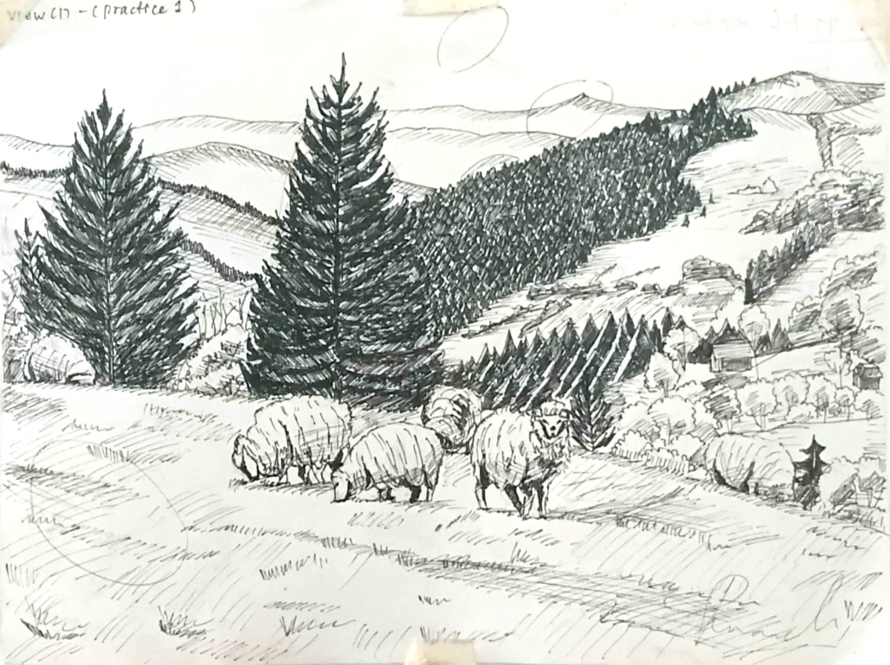
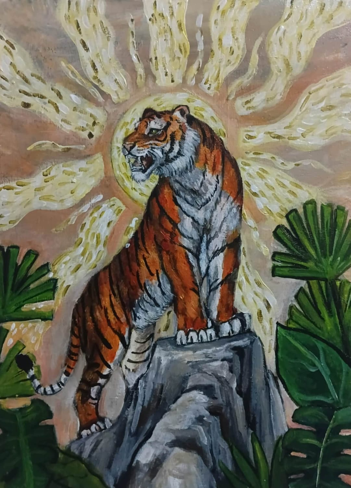
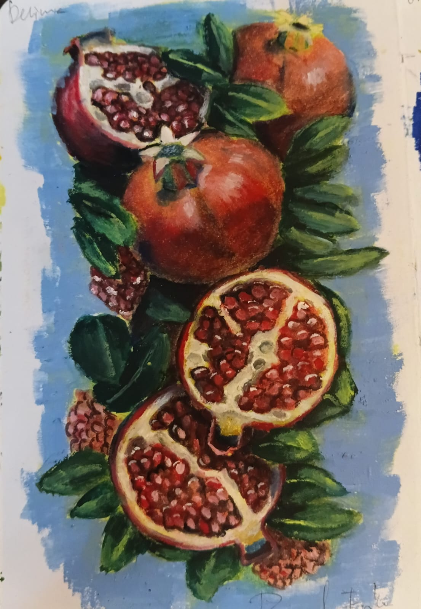

Islamic Economics
Coursework, notes, research ideas, and projects from my academic journey.
PERSONAL PORTFOLIO · 2026
Islamic Economics Student · Artist · Creative Learner
Exploring ideas through economics, art, and continuous learning — one project, one brushstroke, and one question at a time.

ART · IDEAS · PROCESS 01
02THE PERSON
I am a university student studying Islamic Economics, while building a creative life around painting, visual storytelling, organization, and new skills.
This website is a living portfolio — part introduction, part art archive, and part learning journal. It documents not only finished work, but also the process behind it.
THE JOURNEY
My creative journey started with a simple love of painting. With every painting, I learned to slow down, observe details, and become more patient with the process.
At the same time, my academic journey in Islamic Economics has taught me to look at ideas from another angle: systems, ethics, value, responsibility, and how people interact through economic activity.
The two worlds do not have to be separate. For me, creativity is a way of thinking.
THE ART
Painting is one of the ways I explore observation, emotion, patience, and visual expression. This collection can grow as new works are completed.






PROJECTS & LEARNING
Coursework, notes, research ideas, and projects from my academic journey.
Exploring how art, creativity, and entrepreneurship can become meaningful projects.
Building confidence in English speaking, vocabulary, listening, and everyday communication.
Exploring coding, digital tools, and practical skills that support future creative projects.
THE NEXT CHAPTER
Future pages can become a record of exhibitions, collaborations, business experiments, academic projects, competitions, and new creative work.
LET'S CONNECT
For collaborations, creative projects, academic conversations, or simply saying hello.
pernandaerika@gmail.com